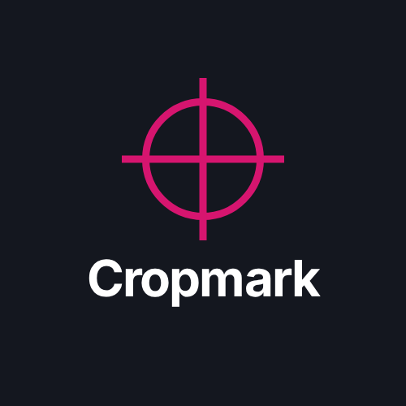

Cropmark has been retired
Cropmark was a product-image API: one JSON call with a title, price and photo returned a finished 1080×1080 image. It was switched off in October 2026, and the API at api.trenoxahq.com no longer responds.
It was built by TrenoxaHQ, which now focuses on Shopify B2B and wholesale automation. Read about the project at trenoxahq.com.